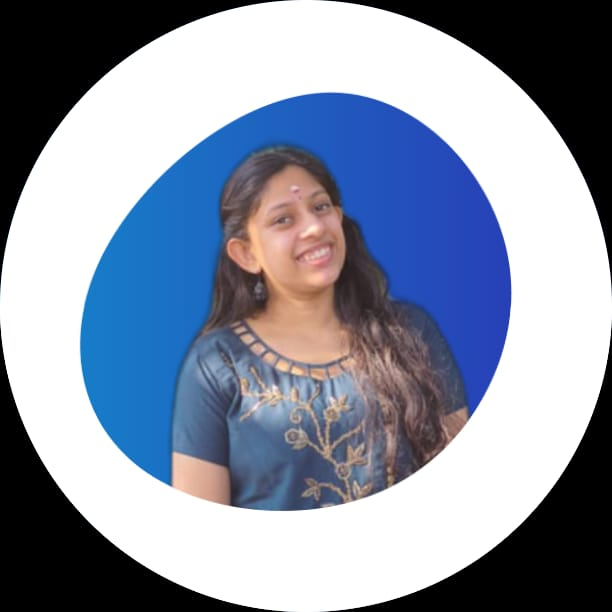

Nandhana Krishna

About Me
I am a hardworking and dedicated Computer science engineering student and a job seeker with strong organizational skills, eager to secure entry-level position.I am also an aspiring web developer with a strong passion for front-end and back-end development.Dedicated to expanding knowledge and skills in web development to contribute to cutting-edge projects in the industry.
Education
-
KENDRIYA VIDYALAYA SAP(2009-2021)
- 12th CSE(main) - 95%
- 10th - 90.1%
-
Lal Bahadur Shastri Institute of Technology for Women, Thiruvananthapuram(2021-2025)
- B-Tech Computer Science and Engineering(Present)
Internships and Volunteering Experience
- Zero to Hero of Robotics,conducted by Alphasys 3D Printing Solutions
07.12.2021 - 11.12.2021
Introduction to basics of Robotics
- Project Ganitham,Insight for Innovation
01.01.2022 - 31.01.2022
worked as a mentor as well as a teacher for students
- IWD 2023 INSPERIA 1.0(GDSC LBSITW)
26.03.2023
Volunteered for ice-breaking session for more than 150 students
Skills
- Time Management
- Efficiency
- Team work
- Communication
Languages
Other